실무를 아는 사람이 AI를 쓸 때 — 1순환 마무리 세션
3주를 3초로 · 팀이 AI로 일하는 법 · 앱 속에 이미 들어와 있는 AI. 4개월의 시드가 어떻게 싹이 됐는지 확인한 마지막 회차
네 번째 AI Best Practice Session 현장 노트
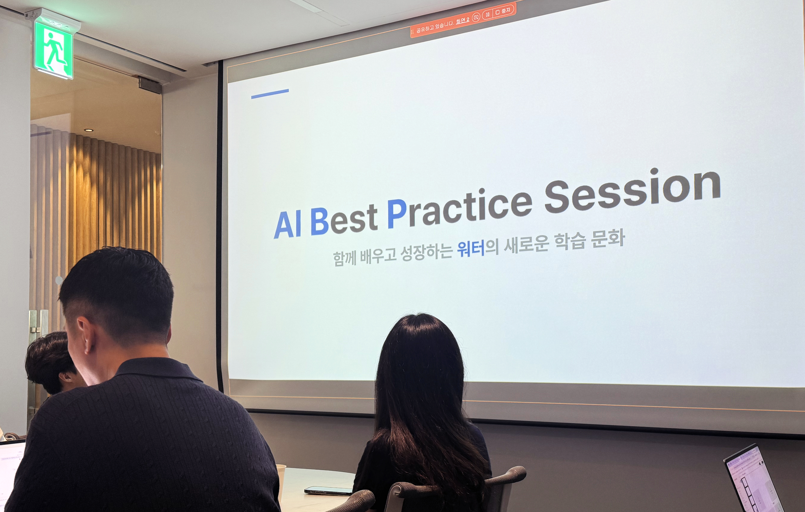
“워터를 시작한 이후에
가장 스트롱한 팀이 되고 있구나.” — 워터 대표, 네 번째 AI Best Practice Session 오프닝
001순환의 마지막, 시드에서 싹으로
이번 세션은 대표님의 자기 고백 같은 오프닝으로 시작됐습니다. “어제 문득 집에 들어가서 딱 앉아 있을 때 그런 생각이 들더라고요. 워터 팀이 그동안 내가 느꼈던 어떤 팀보다 되게 좋아지고 있구나. 워터를 시작한 이후에 가장 스트롱한 팀이 되고 있구나.” 4개월간 이어져 온 1순환의 마지막 세션다운, 조금 벅찬 오프닝이었어요.
7월의 베스트 프랙티스 팀도 발표됐어요. 지난 회차 인사팀과의 박빙 끝에 BXD팀이 근소한 차이로 7월 월간 베스트로 뽑혔습니다. 오명진 매니저님은 BXD팀 소속이면서 개인 발표까지 하셨던 만큼 이 팀의 쾌거까지 함께 안게 됐고요.
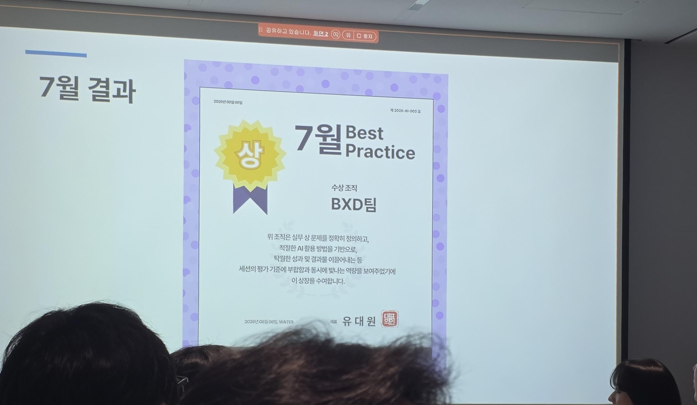
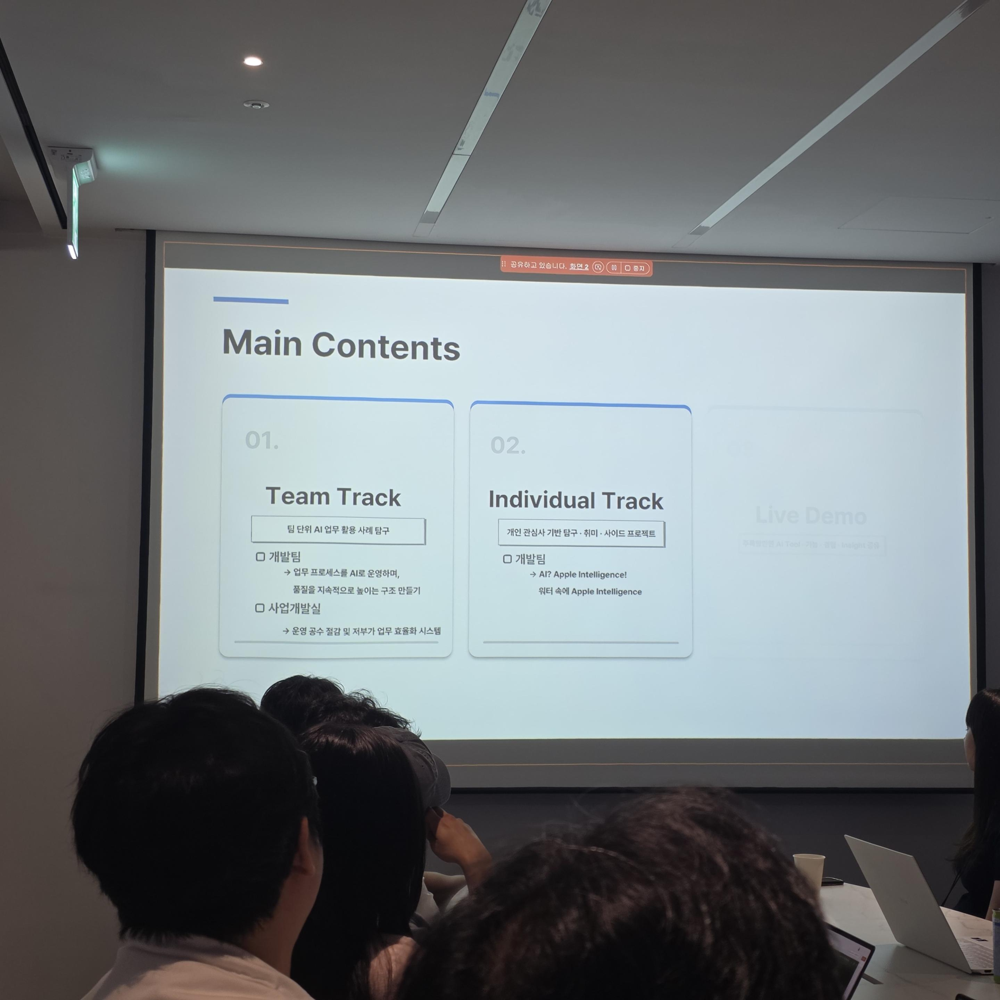
발표자 세 명이 소개됐습니다. 사업개발실 서희전 매니저님, 개발팀 권청 파트장님, 그리고 같은 개발팀 김상우 매니저님(개인 발표). 그리고 오랜만에 특별한 이벤트도 하나 있었어요 — 1순환 마무리 기념으로 세션 후 다 같이 피자를 시켜 먹기로 했습니다. 크루분들 만족도 설문에서 나온 의견을 반영한 것이었어요.

013주를 3초로 — 사업개발실 서희전 매니저님
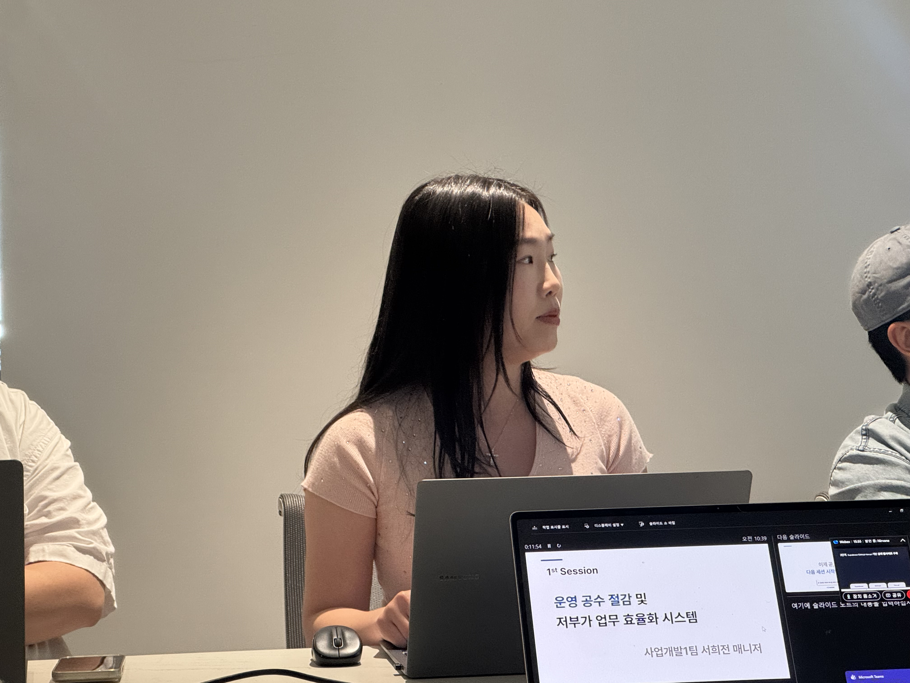
서희전 매니저님의 첫 슬라이드는 짧고 명료했어요. “AI로 무엇을 더 효율적으로 할 수 있을까에 대한 질문에, 저는 가장 오래 걸리고 가장 반복되는 업무에서 시작해 보고자 했습니다.”
사업개발 업무에서 현장 조사 이후 보고서를 작성하고 → 공사비를 산정하고 → 사업성을 판단하는 과정이 꽤 많은 시간이 걸렸어요. 이 과정을 AI와 시스템으로 얼마나 줄일 수 있을지 고민하다 나온 결과물이 ‘모아다(MOADA)’ 종합 시스템이었습니다.
“이 시스템은 딱 세 점만 찍으면 공사비와 사업성이 바로 보입니다. 3주의 기다림을 3초의 판단으로.”
지도 위의 3점 — A점(한전 인입점) · B점(수배전반) · C점(중앙 주차면)
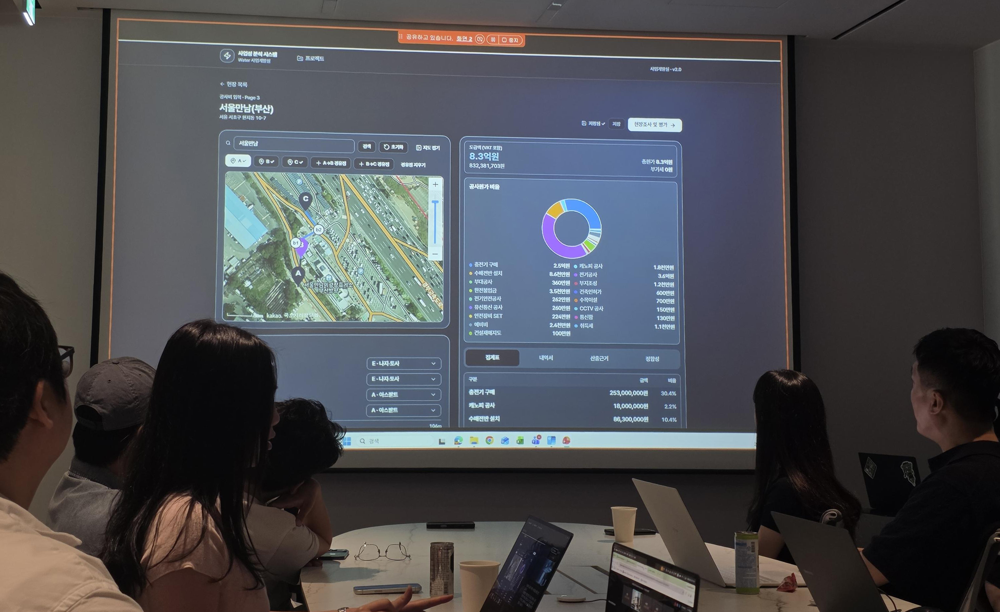
워크플로우는 이렇습니다. 팀원이 현장에 가서 A점(한전 인입점) → B점(수배전반 설치 위치) → C점(중앙 주차면)을 지도에 찍습니다. 중간에 경유점이 있으면 추가하고, 각 구간의 노면 타입(잔디밭·콘크리트 등)을 선택하면 공사비가 오른쪽에 실시간으로 산출됩니다. 견적 요청 → 대기 → 검토로 2주에서 3주 이상 걸리던 초기 검토가 몇 초로 압축된 거예요.
스택 — Supabase + Github(Copilot) + Vercel
시스템은 두 단계로 진화했어요. 1단계는 Cursor와 Claude Code로 HTML을 만들고, 팀원들과 논의하면서 필요한 기능을 총 30번 확장. 2단계는 실제 웹사이트로 전환 — Supabase(DB), Github(코드 관리 + Copilot AI 조력자), Vercel(자동 배포)을 조합했습니다.
대표님 코멘트가 이 발표의 성격을 정확히 짚었어요.
“실무의 워크플로우를 제대로 이해하고 있는 사람이 AI를 사용하기 시작하면 얼마나 효과적인지를 제대로 딱 보여주는 발표인 것 같아요. 나도 쓰고 싶어.”
02팀이 AI로 일하는 법 — 개발팀 권청 파트장님
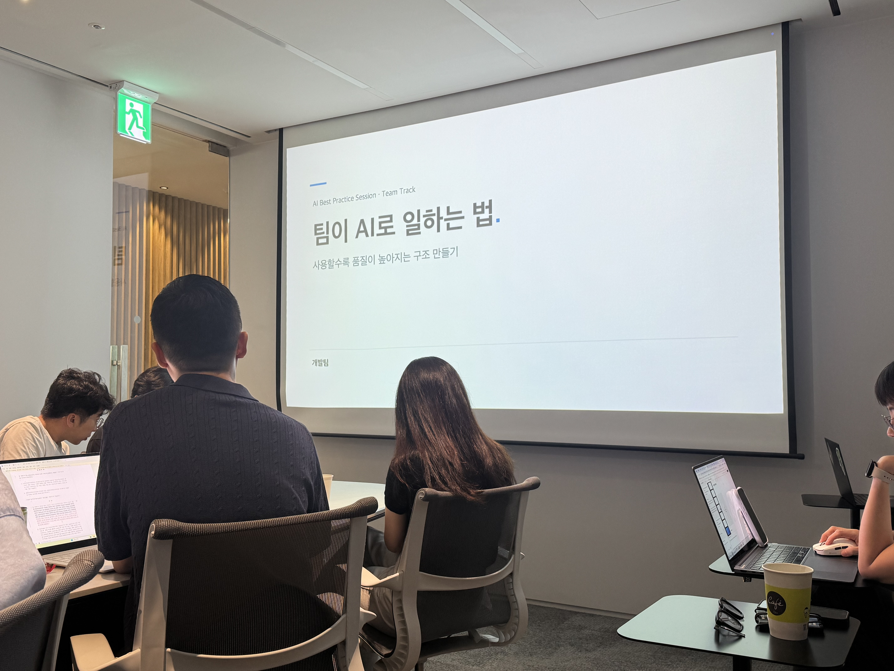
권청 파트장님은 발표 시작 전에 실시간 시연 세팅부터 걸었어요. 개발팀 세 명에게 “6월 운영 보고서 출력”이라는 티켓을 각자 던져놓고, 발표가 끝날 무렵 결과를 검증하겠다는 계획. 그 세 분은 지금까지 운영 보고서를 한 번도 뽑아본 적이 없는 분들이었어요.
개인은 빨라졌는데, 팀은?
발표의 핵심 질문은 이거였어요. “개인은 AI로 충분히 빨라졌습니다. 그런데 팀은 어떤가요? AI를 다 같이 사용하고 공유하면서 팀에서 일을 같이 할 때 효율이 잘 나올까요? 그렇지 않더라고요.”
권청 파트장님이 진단한 세 가지 문제:
- 넘기면 손해 — 예전에는 50개 작업을 5명한테 10개씩 나누면 빨라졌는데, 지금은 넘기는 순간 나와 AI의 컨텍스트가 유실되면서 오히려 오래 걸림
- 이해 없이도 대량 생산이 가능 — AI가 그럴듯한 산출물을 대량으로 만들다 보니 검토 공수가 폭발. 개발팀에서 겪은 가장 큰 아픔이었다고
- 사람이 병목 — AI가 여러 에이전트를 동시에 돌리는 속도를 사람의 이해 속도가 따라가지 못함
“AI가 실행을 굉장히 싸게 만들었어요. 예전에는 생산 자체가 어려웠는데 지금은 생산이 쌉니다. 그래서 이제 중요해진 건 얼마나 빨리 만드느냐가 아니라, 요구사항을 명확히 정리하고 전체를 이해하는 것이 됐어요. 비싼 요구사항이 된 거죠.”
해결책 — 하네스 엔지니어링
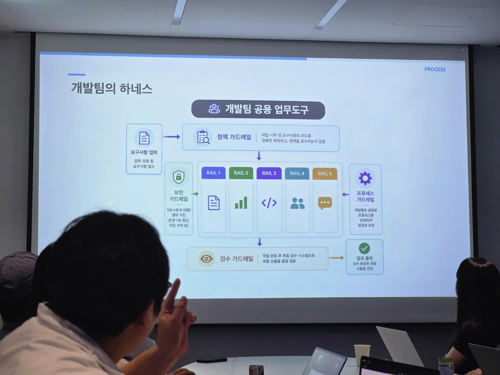
해법은 하네스(harness) 엔지니어링. 지식의 집단체 같은 프레임인데, AI에 프롬프트가 들어오면 정의된 하네스가 자동으로 해석해서 결과물을 컨트롤해줘요. 5개 레일(기능 개발·작은 수정·장애 CS 분석·시스템 성능 진단·반복 데이터 산출)이 있고, 이 레일을 지키는 4개 가드레일(정책·프로세스 검증·검수·보안)이 붙는 구조.
모든 업무가 문서 기반으로 시작해서 문서로 끝나요. 기획 의도를 문서로 남기고, 개발하면서 그 문서를 업데이트하고, 마지막에 결과물 문서를 발행해 축적. 여기서 나온 정량 지표도 인상적이었어요.
- 총 19,370건의 프롬프트 · AI 작업 · 하네스 동작
- 총 118개 세션 (하나의 세션 = 하나의 업무)
- 즉, 하네스 도입 후 120개의 업무를 이 프레임으로 처리
실시간 시연 결과 — 파일 바이트까지 똑같은 산출물
발표 초반에 세팅했던 시연. 세 명 모두 6월 운영 보고서를 처음 뽑아봤음에도 완전히 동일한, 파일 바이트까지 같은 결과물을 만들어냈어요. “이제 앞으로 운영 보고서 때문에 고생하는 일은 없을 겁니다. 개발팀 아무한테나 얘기하면 운영 보고서를 받아가시면 돼요.”
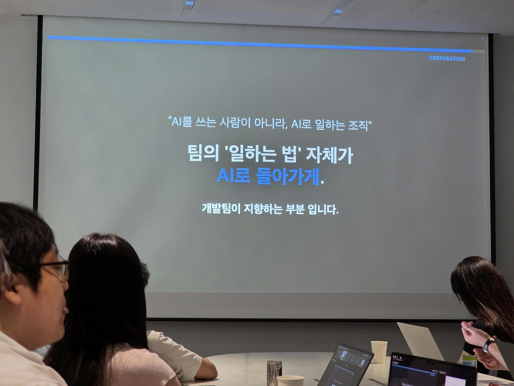
“AI는 증폭기예요. 세컨 브레인이 아닙니다. 사람이 이해를 제대로 못하면 완전히 잘못된 결과가 대량으로 나옵니다. 그게 진짜 최악의 결과예요. 그래서 결론은 하나 — 나 개개인이 스스로 업무를 최대한 깊게, 넓게, 자세하게 파악하려고 노력해야 한다는 것.”
03앱 속에 이미 들어와 있는 AI — 개발팀 김상우 매니저님
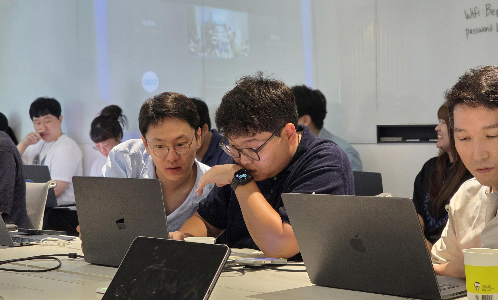
개발팀 김상우 매니저님의 발표는 개인 프로젝트로 진행된 사이드 프로젝트였어요. 주제는 “iOS 26의 애플 인텔리전스를 워터 앱에 어떻게 접목할 수 있을까.”
25년부터 애플이 이 온디바이스 AI를 앱 개발자들에게 열어줬어요. 그래서 어떤 앱이든 아이폰 속 AI를 가져다 쓸 수 있게 된 상황. 김상우 매니저님은 실제 워터 데이터를 넣은 라이브 데모부터 시작했습니다.
라이브 데모 — "가장 가까운 충전소 알려줘"
비교 벤치마크도 인상적이었어요. 애플 인텔리전스는 1~2초, ChatGPT 4o mini는 1.3초. 온디바이스가 오히려 더 빠른 케이스도 있었는데, “인터넷을 거치지 않고 앱 안의 데이터를 애플 인텔리전스가 추출해서 표시”하기 때문이라고 했습니다.
온디바이스 AI의 장점 — 무료 · 오프라인 · 개인정보 보호
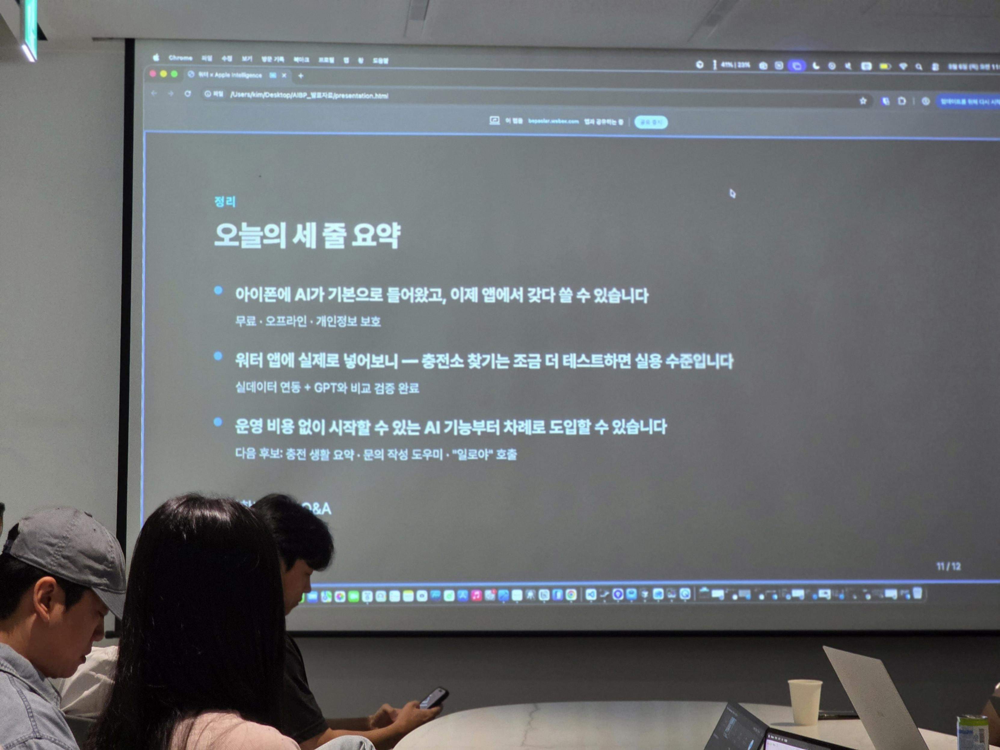
Siri 통합 데모도 이어졌어요. 앱을 열지 않아도 시리에게 “시리야, 워터에서 가장 가까운 충전소 알려줘”라고 하면 앱 안 데이터를 시리가 찾아서 답해주는 구조. 대표님이 즉시 응용 아이디어를 던졌어요 — “그럼 서로 다른 두 지점 사이 중간 지점 충전소를 찾아서 내비로 찍어줘라고 하면 되나?” 김상우 매니저님은 “한번 테스트해봐야 될 것 같습니다”로 유쾌하게 마무리.
“보이스는 정말 앞으로 중요해서, 특히 인카 익스피리언스가 너무 중요해서요. 보이스로 커맨드를 하고 액션으로 이어지는 게 너무 중요합니다. 나중에 예약 같은 것도 보이스로 할 수 있을 거예요.”
04시드를 뿌린 4개월, 이제 싹으로
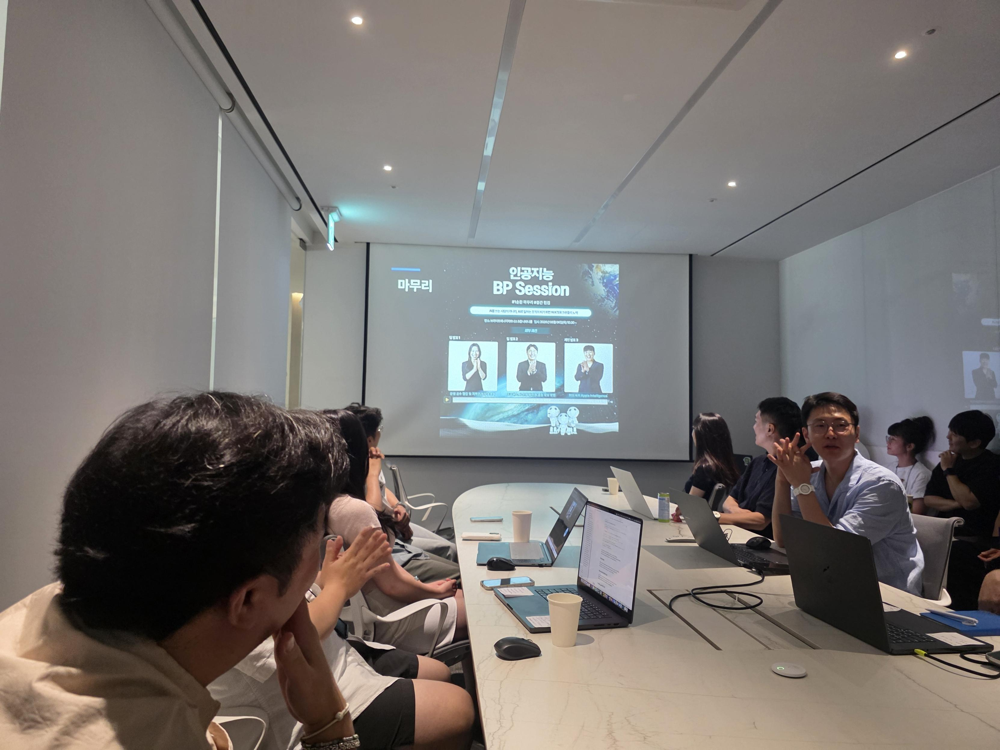
세션이 예상보다 일찍 끝나서 피자가 도착하기 전까지 시간이 좀 남는 반전이 있었어요. 그 시간을 황현정 팀장님이 “1순환 마무리 시점에서 AI를 바라보는 관점이 달라지셨나요?”라는 질문으로 채웠습니다.
5월 첫 세션 때만 해도 발표자들의 부담감이 설문 결과에 역력히 드러났었는데, 이제 8월이 되고 나니 그 부담이 옅어졌다는 것. 시작점(시드)이었던 첫 세션이, 4개월의 시도를 거치면서 이제 정말 싹을 틔우는 시점이 됐다는 이야기였어요.
“시작은 작게, 변화는 함께. 시작은 작고 어렵고, 시도는 불편하고 힘들기도 합니다. 그런데 변화를 함께 추구하면 그게 시도가 아니라 진짜 변화로, 개선으로 이어지는 것 같아요.”
1순환의 발자국 — 5·6·7·8월
4개월 동안 워터 크루의 절반이 발표석에 섰습니다.
- 5월 — 운영관리팀 · 서비스기획팀 (첫 회차, Best Practice 수상)
- 6월 — 마케팅팀 · CXD팀
- 7월 — BXD팀 · 오명진 매니저님
- 8월 — 사업개발실 · 개발팀 · 김상우 매니저님 (오늘)
고 관여든 저 관여든 결국 한 번씩은 AI에 개입한 셈. 시기 자체가 누적된 만큼, 2순환에서는 그 결과가 더 창대해지지 않을까 하는 기대와 함께 세션이 마무리됐습니다.
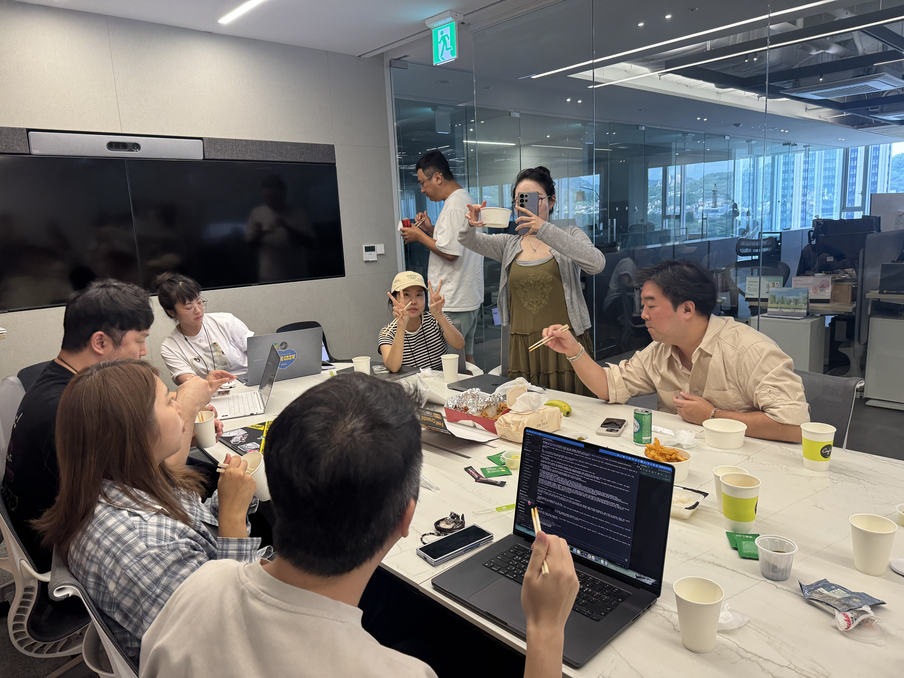
리워드도 정해졌습니다. 5·6·7월 월간 베스트 팀과 개인 발표자들에게 롯데 기프트카드가 지급될 예정. (실제 지급은 롯데카드 이슈로 9월 15일 이후) 백화점 상품권보다 사용처가 넓고 소득공제도 가능한 방식으로 선택됐어요.
다음 순환은 언제일까요. 확실한 건 시드는 이미 뿌려졌고, 이제 싹을 키우고 열매를 맺는 시기가 온다는 것.